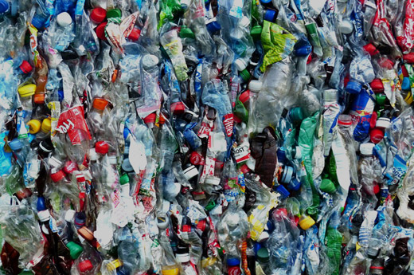
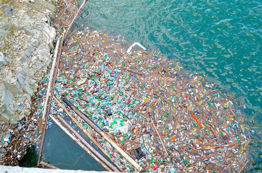

Using vast quantities of fossil fuels and water, bottles are manufactured, filled, and shipped around the globe. (Not a good carbon footprint!) Neither are bottles biodegradable in any meaningful way: what you drink in a few minutes can stick around for a thousand years. Even with recycling efforts, 6 out of 7 plastic bottles consumed in the U.S. are downcycled, then sent somewhere out of sight and out of mind where, for the next millennia, toxins from degrading plastic containers can leach into watersheds and soil. That is just not something we need to give to global neighbors and future generations.
The label on your bottled water may depict a peaceful mountain stream, but that doesn't mean the water inside is pure and pristine. Only some bottled water comes from springs or groundwater sources. It turns out that approximately 25% of bottled water is sourced from the tap. Sure, some companies filter or radiate the tap water with ultraviolet light before selling it to you at several thousand times the cost of municipal tap water (Examples include Aquafina, Dasani, and many other brands). Moreover, studies show that bottled water samples can contain phthalates, mold, microbes, benzene, trihalomethanes, even arsenic. And only recently did the FDA start regulating bottled water for E. Coli, thanks to advocacy by the Natural Resources Defense Council. Upshot: bottled water markup is extreme and health standards are often a wash and may even favor tap water.
Plastic isn't just bad for the planet. It is not good for you, either. Bottled water companies increasingly use BPA-free plastic, but laced into plastic bottles are other chemicals that can seep out if bottles are exposed to heat or sit around for a long time. Some of these chemicals are possible endocrine disruptors. No one knows for sure what the health outcomes are. Do you really want your body to undergo that experiment?

NYC Fashion Week, Chez Panisse, the city of San Francisco and Grand Canyon National Park have all reduced or eliminated bottled water! AVEDA teamed up with The New York Department of Environmental Protection during Fashion Week 2010 to provide free drinking fountains on the streets of New York.
Local food is everywhere these days: CSAs, farmers markets, farm-to-table dining. That local food is grown and cooked with local water! It is the invisible part of the sustainable, healthy food you eat. So, locavores, it is time to get your hydrophilia on and appreciate your water supply just as much as you do your CSA. We should care for and support our water sources like we support healthy, organic, local farms?
Bottlers use standard identifiers, prescribed by FDA regulations, to describe their water but the meanings may be different than you expect.These terms refer to both the geological sources of the water and the treatment methods applied to the water.The terms do not necessarily describe the geographic location of the source or determine its quality. For instance, spring water can be collected at the point where water flows naturally to the surface of the earth, or from a borehole that taps into the underground source. Other terms used on the label about the source, such as glacier water or mountain water are not regulated standards of identity and may not indicate that the water is necessarily from a pristine area. Likewise, the term purified refers to processes that remove chemicals and pathogens.Purified water is not necessarily free of microbes,though it may be. Bottled water must be tested and meet regulatory standards before it can be sold in the U.S. Bottled water, like tap water, can come from a ground water source, such as a well or spring, or a surface water source, such as a river or stream. Most bottled water comes from a ground water source. Ground water is typically less vulnerable to contamination than water from surface sources, however, ground water can still contain naturally high amounts of certain contaminants, including radioactive elements, arsenic,and nitrates, or be vulnerable to contamination from human activities, such as industrial waste, faulty septic systems, and underground gas or chemical tanks. Some bottled water comes from surface water sources. This water typically comes from a public water system and receives additional treatment, such as filtration and disinfection, before it is bottled. Bottlers must list on the label the type of bottled water (such as spring water,mineral water,or drinking water).If the water comes from a public water system and has not been treated to meet FDA definition of purified or sterile water,the label must state that the source is from a community water system.
All About Water
Dangers of Drinking Bottled Water
7 Dangers of Plastic